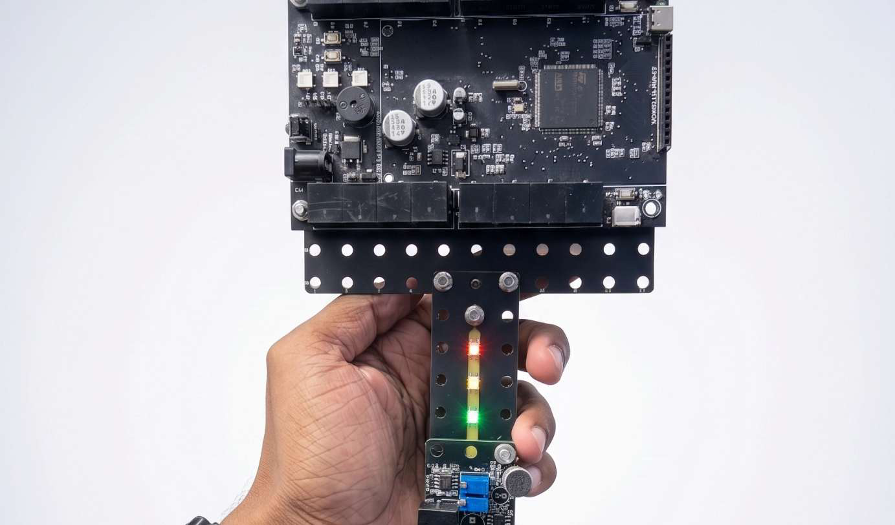
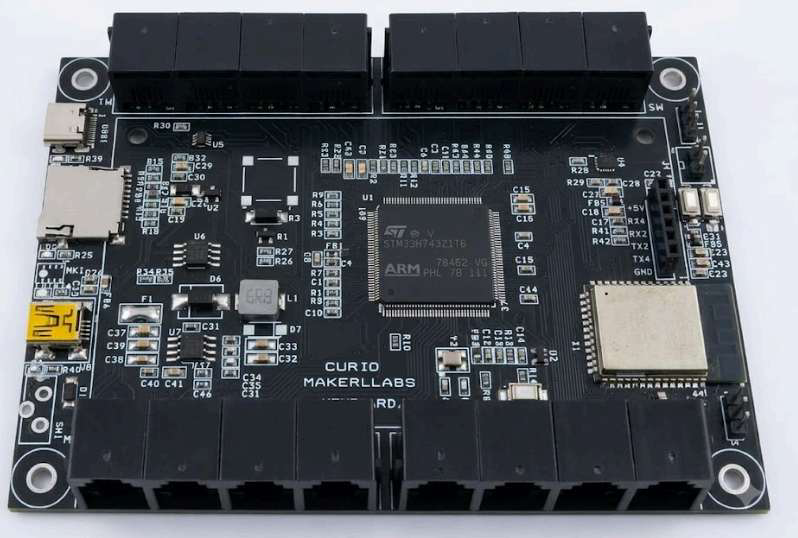
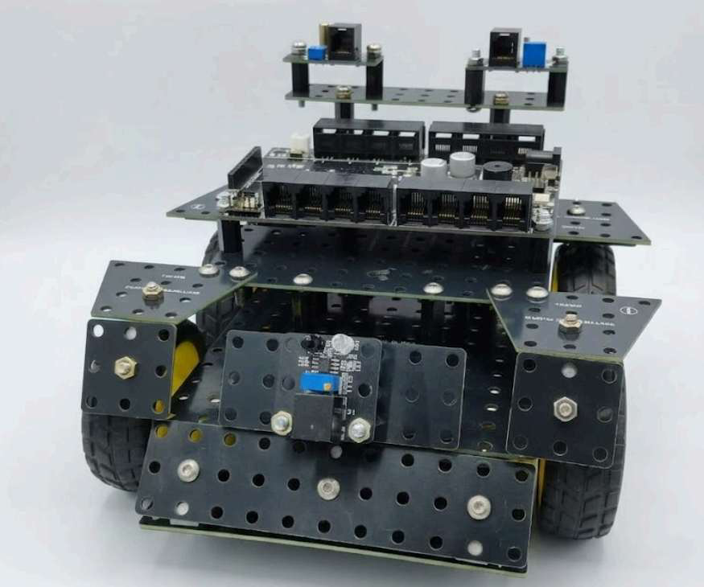

Textbooks explain circuits.
We hand them over.
One board, 70+ sensors and 150+ build parts, wrapped in a curriculum we wrote ourselves. Projects climb a deliberate ladder — every concept returns a year later, harder, attached to a real-world problem. A child doesn't finish a kit. They finish a decade.

We don’t teach children about technology.
We put it in their
hands.
The curriculum came first.
Seventy projects, Each one attaches to a real problem. We built the modules the projects demanded.
One system, twelve years
The board a UKG child taps at is the board a 10th-standard student programs. No restart, no throwaway toys.
Built for real classrooms
Keyed ports, housed modules, M3 bolts. Rated for forty pairs of hands a day and a teacher with no engineering degree.
Four products.
One ecosystem.
A single port standard runs through everything. What a child learns on one product carries directly into the next.

A student picks a problem worth solving, and builds the thing that solves it.
The innovator kit
Not a lesson about irrigation — an irrigation controller, built from 70+ sensor modules and 150+ structural parts, that reads the soil and decides when to open the valve. Not a chapter on air quality — a monitor that logs a classroom through a school day and shows what happened after lunch. The kit exists so that a student's answer to a real problem is a working machine, not a diagram.
Axon
Card-coded robotics
Coding you can hold, on a robot that keeps growing.
Lay out a row of cards, scan them, and the program runs. Bluetooth links Axon to Curio Lab, and a camera turns it into a robot that sees what’s in front of it.
- Physical card programming
- Bluetooth to Curio Lab
- Camera for vision projects
- Voice output
- Onboard sensing
Pip
Map-based robotics
A story on the floor, and a robot the child sends through it.
Pip travels a printed map — a village, a solar system, a food chain. The child plans the route, taps out the commands, and finds out whether the plan survives contact with the map.
- Map-based journeys
- Screenless, no login
- Colour and distance sensing
- Voice narration and story mode
Deck
Early literacy and numeracy
Touch a card, and Deck responds.
Challenge and quiz modes ask rather than tell, so the child works through it alone and knows straight away whether they were right.
- Challenge and quiz modes
- Record-your-own-voice prompts
- Any language spoken at home
- Screenless
Curio Studio
Blocks, with a 3D twin
Plug in a module and its 3D twin appears on screen — rotating, wired, reading live. Children see the sensor, the port and the code in one view, then flip from blocks to text when they’re ready.
Try it below ↓

Find it. Build it. Teach it. Prove it.
Find it
A project begins with something real. Engineering begins with noticing — and a child who chose the problem is the one who stays with it when it stops working.
Build it
They assemble the machine — 70+ sensor modules and 150+ structural parts, bolted into a structure. Nothing to wire or debug, so the time goes into the design decisions.
Teach it
The kit stops being a kit. The student trains the machine themselves — to recognise an image, a voice, a gesture. Somewhere in that loop, the child becomes the teacher.
Prove it
Tested against the real thing, not a rehearsed run. It fails, they fix it, then stand up and account for it — what they built, why, and what’s next.
Plug something in.
A working slice of Curio Studio. Pick a module, choose a port, set the threshold — and watch the program a child would write respond to live readings.
Step 1 · module
Step 2 · port (1–8 of 16)
Step 3 · power
Step 4 · trigger threshold
Live reading · P2
Program · block view
Six blocks, no syntax. The same program flips to text with one toggle when a student is ready for it.
How we’re doing.
Pre-launch, and deliberately so. We are building hardware and curriculum in parallel rather than shipping a kit that has nothing to teach with it.
- Mainboard rev 4 — STM32H743, 16 keyed ports, hot-swap
- 70+ sensor modules designed and fabricated
- Structural build system, 150+ parts
- Curio Studio alpha with live 3D module view
- Axon chassis and closed-loop drivetrain
- Curriculum mapping, pre-KG to 5th
- Moulded module housings for classroom wear
- Teacher dashboard and lesson packs
- Pilot cohort — first ten schools
- Pip screenless robot, first working unit
- Curriculum, 6th to 10th
- Curio Studio public beta
- Deck coding card reader
- Multi-state school rollout
What changed this month.
Curriculum mapping began
Four teachers, one syllabus pass — 118 projects tied to outcomes, pre-KG through 5th.

Axon drove itself around a track
First closed-loop line-follow on the bolted chassis, built from stock kit parts.
3D module view lands in Studio
Plug in a module, its twin appears live on screen — time-to-first-project fell under a minute.
Rev 4 mainboard is back from fab
STM32H743, reworked power tree — all sixteen ports now hot-swap without a reset.
Curio Studio opens to public beta
Sign-ups open for schools and hobbyists — the same blocks-to-text editor we build with internally.
Questions schools ask us.
Is this a kit or a curriculum? +
Both, and that is the point. Schools get hardware, lesson plans, teacher training and software as one programme — so nothing ends up in a cupboard because nobody knew what to do with it.
What ages does it actually cover? +
Pre-KG through 10th standard. Pip and floor tiles for the youngest, Curio One with block coding through primary, Curio One plus Axon with text code for middle school. One port standard the whole way.
Do teachers need an engineering background? +
No. Modules self-identify, Studio shows a 3D twin of whatever is plugged in, and every project ships with a lesson plan, a materials list and the outcome a child should reach. Training is two days.
How rugged is it, really? +
Modules are housed and bolted rather than friction-fit, ports are keyed so reverse insertion is physically blocked, and the board survives shorted outputs. It is designed for forty pairs of hands a day.
When can a school actually get it? +
We are forming the pilot cohort now. Pilot schools get hardware, training and curriculum at cost, direct access to the engineers, and real influence over the product before general release.
What do you need from partners? +
Schools to pilot with, manufacturing partners in India who can hold tolerance at volume, and investors who understand that hardware timelines are measured in revisions, not sprints.
Partner with us
Build the first hundred classrooms with us.
We are looking for pilot schools, manufacturing partners, and investors who are patient with hardware. If any of those is you, we would rather talk early than pitch late.